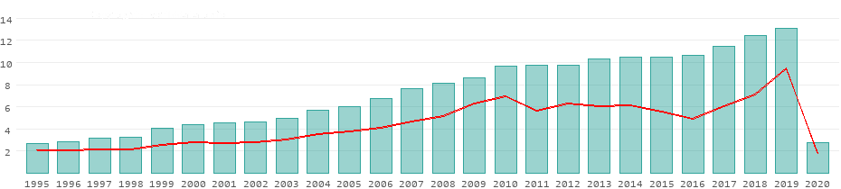

Development of the tourism sector in Morocco 1995 to 2020
The following table shows the number of foreign tourists registered in Morocco per year. A tourist is any person who spends at least one night in the country but does not live there for more than 12 months. To the extent that the survey also included the purpose of the trip, business and other non-tourism trips had already been filtered out. In most countries, the number of passengers passing through on the same day, for example ship crews or aircraft crews, is also not considered a tourism target. If the same person comes and goes several times a year, each visit counts again.
Data in the table in millions of tourists. The red line corresponds to the average of all 6 countries in North Africa.
Morocco registered a total of 3 million tourists in 2020, ranking 53rd in the world in absolute terms.
Not including the size of a country, such a ranking list may not be very meaningful. Putting the tourist numbers in relation to the population of Morocco, the result is a much more comparable picture: With 0.075 tourists per resident, Morocco ranks 131st in the world. In North Africa it ranked 4th. Morocco generated around 4.51 billion US dollars in the tourism sector alone. This corresponds to 3.4 percent of its gross domestic product and about 43 percent of all international tourism receipts in North Africa.
14 things you probably didn't know about Morocco
- It is the first tourist destination in Africa and receives more than 10 million tourists a year. This sector is greatly favored by the political stability that prevails in the country. In addition, we Spaniards are the ones who visit this country the most.
- The Hassan II Mosque in Casablanca is the tallest religious building in the world. It was built by the sultan with the same name, whose purpose was for the economic capital of Morocco to have an emblem that would distinguish it from the rest of the country's cities.
- It is the world's leading importer of green tea. For Moroccans, tea is an important part of their culture, in addition to having several moments a day in which tea is enjoyed, it is common for it to be offered to guests. When serving it, they throw the water with the teapot, from the height so that when it hits the glass (full of sugar and mint) it foams. It is a tradition and symbol of education.
- The Moroccan Royal Guard dates back to 1088 and is one of the oldest military corps in the world. This body has as its mission the security of the king and is made up of 3000 men.
- The city of Chaouen is famous for its blue houses, painted this way by Jewish refugees, who thought that this color scared away mosquitoes
- Greeting with the left hand is a very rude gesture, since it is the one used for personal hygiene. The right hand is the one that should be used to greet, eat and receive things.
- Kissing and other gestures of love are prohibited and reserved for privacy.
- The second most expensive and prestigious university in Africa is located in the European-style city, Ifrane and is called Al Akhawayn.
- As in other Muslim countries, in Moroccan pharmacies instead of symbolizing them with a luminous cross, they are marked with a luminous crescent.
- The typical red hats that you see in many movies (you may have seen them in The Simpsons) originate from the city of Fez and that is how they are called.
- It is normal to see men holding hands or to see a group of friends hugging each other walking down the street. These are symbols of friendship and not at all related to homosexuality.
- Formerly the houses in Morocco and many Arab countries were all of the same height. This is because on the terraces women can take off their tunics and keep some of their body parts uncovered. The houses are all the same height so that no one can spy on the neighbor.
- Al Qarawiyyin University, located in Fez, is the oldest university in the world still in operation. It is also known for being one of the largest architectural complexes in Fez, and one of the most important centers of Islamic learning, which was founded in 859 by a Tunisian woman, Fatima Al-Fihri.
- Henna tattoos are symbols that protect against witchcraft and the evil eye. It augurs fertility for future wives, so they decorate their hands and feet with designs that include plants, stars, and verses from the Koran. The mother of the bride is the one who usually performs the tattoo, in the presence of friends and women of the family. The annual production of henna reaches 600 tons.